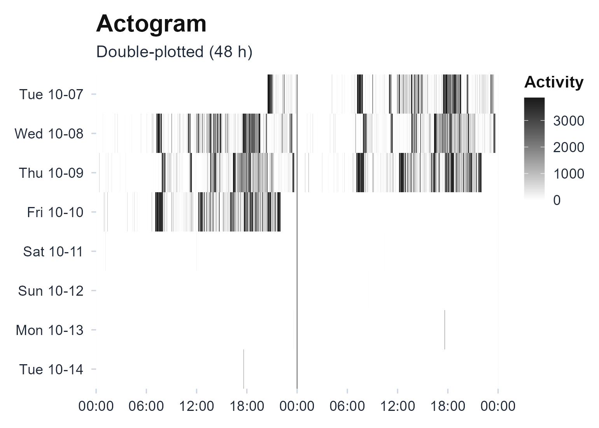
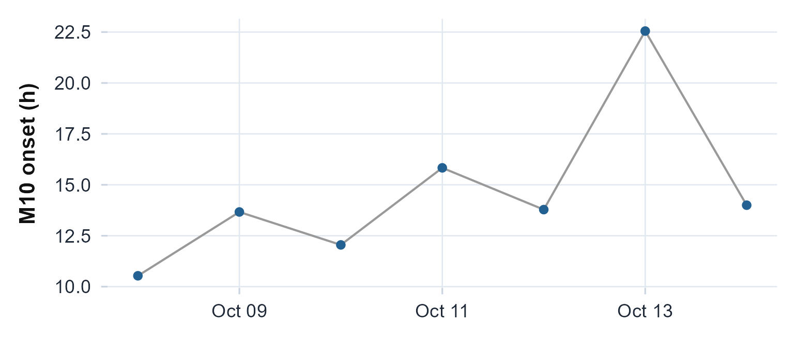

The idea, and a rule to remember
The nonparametric metrics describe a rest-activity rhythm without assuming it has any particular shape. Where the cosinor asks “how well does a cosine fit?”, interdaily stability, intradaily variability, and relative amplitude ask only “how regular, how fragmented, and how deep is the rhythm?”, questions you can answer even when the daily profile is asymmetric, bimodal, or squared-off, which real rest-activity data usually is.
The rule to carry through this article: nonparametric metrics make no shape assumption, but they are sensitive to epoch length and to missing data. Two recordings binned to different epochs are not directly comparable, and a few device-off days can move the numbers as much as a real change in the rhythm.
The math
Write the recording as activity values at a fixed epoch, with overall mean . Bin them to hourly means and let be the mean across all days at hour-of-day , over hours.
Interdaily stability (IS), how tightly the pattern repeats from one day to the next (Witting et al., 1990):
Intradaily variability (IV), how fragmented the rhythm is, from the squared hour-to-hour differences (Witting et al., 1990):
Relative amplitude (RA), the day-night contrast, from the most-active 10-hour window M10 and the least-active 5-hour window L5 of the average day (Van Someren et al., 1999):
circadian.rhythm() returns all of these, plus the 1-hour
extremes L1 and M1, the autocorrelation predictability
,
and the onset times of each window.
Assumptions, and when they break
- Evenly spaced epochs. IS and IV are defined on a regular grid; gaps must be handled (the package works on the valid epochs and reports coverage).
-
Enough whole days. IS is a between-day quantity, so
a one- or two-day record gives an unstable estimate.
circadian.rhythm()sets aside days with too little valid recording before computing. - A fixed epoch length. IV in particular rises as the epoch shortens (finer sampling exposes more hour-to-hour change), so only compare IV computed at the same epoch. The multiscale tools below make that dependence explicit.
- Wear time. A stationary, taken-off device reads as deep rest; gate the counts on valid wear first if the recording has device-off stretches.
Recovering known truth
Before trusting these numbers on real data, it is worth seeing them behave on data whose answer we know. We build three seven-day recordings: one whose day repeats exactly, one whose peak wanders a few hours from day to day, and one that is pure noise. IS should fall from near 1 toward 0 across the three, and IV should rise toward its noise ceiling of about 2.
ts <- seq(as.POSIXct("2024-01-01", tz = "UTC"), by = 60, length.out = 7 * 1440)
hod <- as.numeric(format(ts, "%H")) + as.numeric(format(ts, "%M")) / 60
day <- (seq_along(ts) - 1) %/% 1440
set.seed(1)
regular <- pmax(0, 100 + 80 * cos(2 * pi * (hod - 14) / 24)) + rnorm(length(ts), 0, 5)
acro_jit <- (14 + rnorm(7, 0, 4))[day + 1] # acrophase wanders by day
jittered <- pmax(0, 100 + 80 * cos(2 * pi * (hod - acro_jit) / 24)) + rnorm(length(ts), 0, 5)
noise <- pmax(0, rnorm(length(ts), 100, 80))
recover <- function(x) {
r <- circadian.rhythm(x, ts)
c(IS = r$IS, IV = r$IV, RA = r$RA)
}
knitr::kable(
rbind(regular = recover(regular), jittered = recover(jittered), noise = recover(noise)),
digits = 3,
caption = "IS falls and IV rises as a planted rhythm is made irregular, then noise."
)| IS | IV | RA | |
|---|---|---|---|
| regular | 1.000 | 0.069 | 0.722 |
| jittered | 0.302 | 0.087 | 0.382 |
| noise | 0.109 | 1.958 | 0.015 |
A rhythm that repeats exactly returns IS at its ceiling of 1 with a near-zero IV; day-to-day phase jitter pulls IS down to a third of that while RA shrinks; pure noise leaves IS near 0 and IV at its ceiling near 2. The metrics report exactly the regularity we put in.
On a real recording
The recording bundled with the package runs the same way.
circadian.rhythm() returns a typed object that prints its
own metrics.
agd <- agd.counts(read.agd(example_agd(1), verbose = FALSE))
cr <- circadian.rhythm(agd$axis1, agd$timestamp)
cr
#>
#> Circadian Rhythm Analysis
#>
#> Data Summary
#> Days analyzed: 8
#> Valid circadian days: 6
#> Epoch length: 60 seconds
#>
#> Non-Parametric Metrics (IS/IV: Witting et al. 1990; RA/L5/M10: van Someren et al. 1999)
#> L5 (least active 5h): 6.10 counts/min, onset 01:28
#> M10 (most active 10h): 602.93 counts/min, onset 12:02
#> L1 (least active 1h): 3.10 counts/min, onset 02:35
#> M1 (most active 1h): 1175.51 counts/min, onset 17:43
#> Relative Amplitude (RA): 0.9800 (range 0-1, higher=stronger rhythm)
#> Interdaily Stability (IS): 0.2279 (range 0-1, higher=more consistent)
#> Intradaily Variability (IV): 1.0008 (near 0 = sine, near 2 = noise)
#> Phi (autocorrelation): 0.4151 (higher=more predictable)
#>
#> Sleep-Based & Variability Metrics
#> Sleep Regularity Index: Not calculated (requires sleep_state input)
#> Onset timing variability: 2.23 hours
#> L5 timing variability: 0.77 hours (circular SD)
#> M10 timing variability: 3.70 hours (circular SD)
#>
#> References: Witting (1990), van Someren (1999)
plot_actogram(agd$axis1, agd$timestamp)
Double-plotted actogram of the bundled recording. The active rows do not stack into one vertical band; they drift, which is the low interdaily stability the metrics report.
Reading the numbers
State each metric in human terms:
- IS runs 0 to 1; near 1 is a highly stable 24-hour pattern, below about 0.3 is weak. Here it is low: the days do not land at the same clock time.
- IV runs from about 0 (a smooth sine) to about 2 (noisy or split into ultradian bouts).
- RA runs 0 to 1; higher is a stronger day-night contrast.
The most informative reading is often the combination. This recording pairs a high RA (near 0.98) with a low IS (near 0.23): the days are strongly active, but the pattern does not repeat at the same clock time, a strong rhythm carried on irregular timing, which neither number says on its own.
The wider nonparametric family
The same averaged-profile idea generates a family of related descriptors.
Generalising L5/M10 to any window.
activity.extrema() reports the least- and most-active
window of any length, with onset and midpoint times. L1/M1 and L5/M10
are special cases.
activity.extrema(agd$axis1, agd$timestamp, windows = c(1, 5, 10))$table
#> window_h L_mean L_onset_h L_mid_h M_mean M_onset_h M_mid_h
#> 1 1 3.102381 2.583333 3.083333 1175.5115 17.71667 18.21667
#> 2 5 6.098095 1.466667 3.966667 756.6825 16.25000 18.75000
#> 3 10 92.392381 21.100000 2.100000 602.9296 12.03333 17.03333Making the epoch dependence explicit. Because IV and
IS depend on the bin size,
intradaily.variability.multiscale() and
circadian.is.multiscale() recompute them across a range of
epochs, so you can see (and report) how the value moves with resolution
rather than pinning it to one choice (Goncalves et al., 2014).
intradaily.variability.multiscale(agd$axis1, agd$timestamp)
#> Multiscale Intradaily Variability
#>
#> IVm (averaged): 0.641
#>
#> bin_minutes IV
#> 5 0.5345644
#> 10 0.5428775
#> 15 0.5696848
#> 30 0.7239887
#> 60 0.8360881
circadian.is.multiscale(agd$axis1, agd$timestamp)
#> bin_minutes IS
#> 1 60 0.2279
#> 2 30 0.2238
#> 3 15 0.2102How cleanly rest separates from activity.
dichotomy.index() compares activity during a defined rest
span against the active day (Mormont et al., 2000); here we mark
the night hours as rest.
h <- as.numeric(format(agd$timestamp, "%H"))
dichotomy.index(agd$axis1, agd$timestamp, rest = h >= 23 | h < 7)
#> Dichotomy Index (I<O)
#>
#> I<O: 0.0%
#> Active median: 0.0 counts
#> Rest / active epochs: 3360 / 6559Fragmentation. state.transitions() and
transition.probability() summarise how readily the subject
switches between rest and activity (the kRA/kAR rates and the
closed-form transition probabilities), capturing fragmentation a single
amplitude cannot (Lim et
al., 2011).
state.transitions(agd$axis1)
#> Rest-Activity State Transitions
#>
#> Threshold: >= 1 counts = active
#> kRA (rest->active): 0.0392 (356 rest bouts)
#> kAR (active->rest): 0.1068 (356 active bouts)
#> pRA / pAR: 0.0487 / 0.1367
transition.probability(agd$axis1)[c("tp_ra_mle", "tp_ar_mle")]
#> $tp_ra_mle
#> [1] 0.04853705
#>
#> $tp_ar_mle
#> [1] 0.1366603Per day, to see drift.
circadian.daily() reports each day on its own, so
within-recording change shows instead of being averaged away.
daily <- circadian.daily(agd$axis1, agd$timestamp)$daily
ggplot(daily, aes(date, M10_onset_h)) +
geom_line(colour = "grey60") + geom_point(colour = "#236192", size = 2) +
labs(x = NULL, y = "M10 onset (h)") +
theme_actiRhythm()
The most-active-window onset for each day. Reporting it per day, rather than pooled, shows how steady the active phase is.
Limitations
- Missing data moves the numbers. A few device-off days can shift IS as much as a real change; always check coverage and gate on wear time.
- Epoch dependence. Compare IV (and to a lesser extent IS) only across records binned to the same epoch; use the multiscale view when epochs differ.
- A minimum of valid days. Very short records give unstable IS; the function enforces a per-day validity threshold and reports how many days qualified.
Reference and validation
The nonparametric battery follows Witting et
al. (1990) and Van Someren et al. (1999), with the multiscale and
dichotomy extensions of Goncalves et al. (2014) and Mormont et al. (2000). actiRhythm’s IS, IV, RA, L5,
and M10 are cross-checked against the nparACT and
ActCR reference implementations (to the printed precision)
in the Validation article and the
package’s test suite.